Playdate Horror Dev Log 1: The Concept
13/04/2026
The project and its goals:
I started this project wanting to work on something for the playdate; a handheld console with a novel crank mechanism to interact with its unique library of games. My first through of how this crank could be utilized was by using it as a wind-up flashlight in a horror game that focuses on light and dark. This will be my first project for the playdate console, and i hope it will teach me a few different lessons in game development.
- Working outside of a game engine leaning more into software development than purely game stuff.
- Working on lower powered hardware requires careful consideration when it comes to optimization and memory management.
- Utilizing the novel interaction method provided by the hardware to make an experience that is unique to the console.
The goal for the final project will be a survival horror game inspired by the Metroidvania exploration of resident evil 2 and the light and dark mechanics of Alan wake 2. at present I know I want 3d person shooting, but I'm not sure if this perspective will also be used for exploration or if the exploration will be like that of the 2D Pokémon or legend of Zelda games, and have the third person perspective be limited to shooting galleries.
Below is a rough thumbnail scetch for what the game may look like.

Enemies
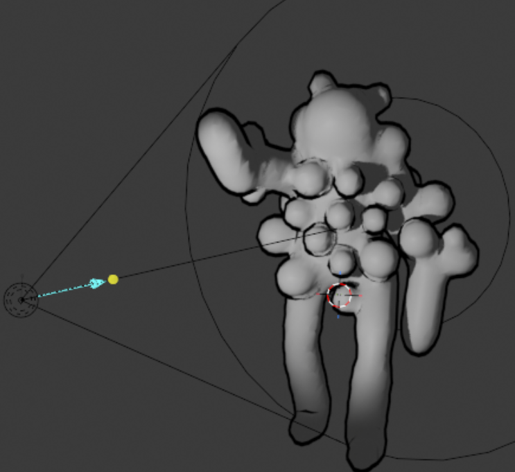
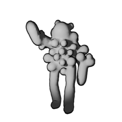
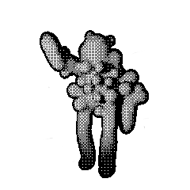
Enemy characters are rendered in 3d with an outline effect to create contrast in all environments. This render is then bought into photoshop and a dither effect is applied, if needed additional touch ups and drawing can be done at this stage. This will be the process for creating enemies in the game.
The Main Character:
One freedom of the playdate is the low resolution and 1-bit color depth allowing for cleaner blends of elements as photographic and photorealistic graphics can share the same space as imperfectly rendered cg elements and still create a cohesive and detailed final image.
As a placeholder we are using a screenshot of Alan wake 2 featuring the character, Sage Anderson. To the right of this image is the same character with a dither effect applied. Unfortunately, using the dither effect on such a dark image creates a pretty bad effect as essentially all detail is lost. Clearly if we want to use dithering on the character, some work will need to be done before dithering. Not having a sensitivity or threshold adjustment limits the effectiveness of this method.
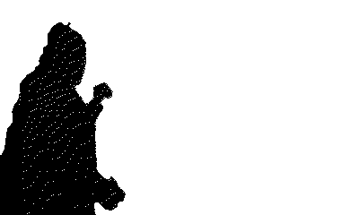
In the example below, we used a color ramp to dial in the level of detail of our image, which creates a much cleaner result. However, I want to see how else I can edit the image to keep detail as I worry the highly noisy result will cause the image to blend into the background or be unreadable.
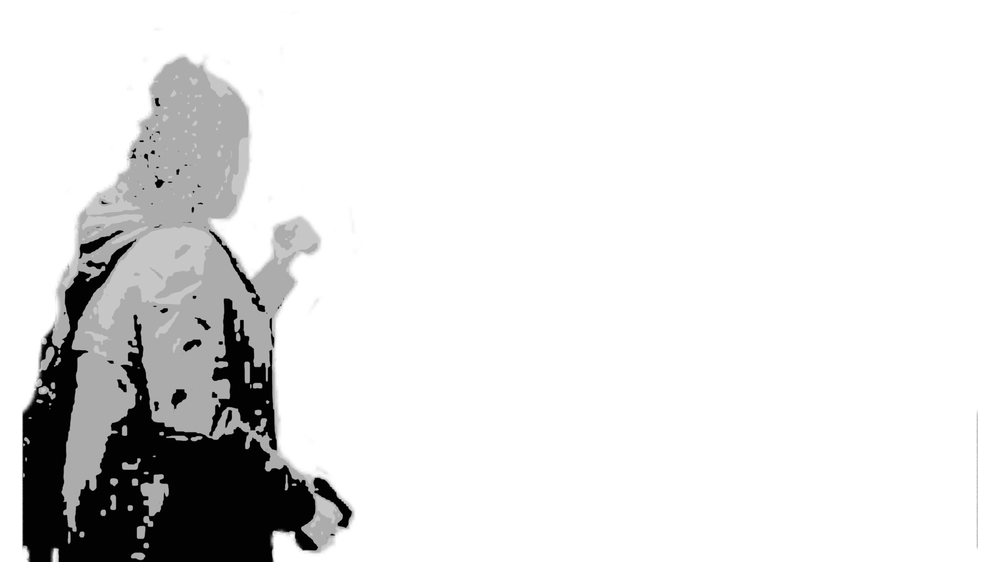
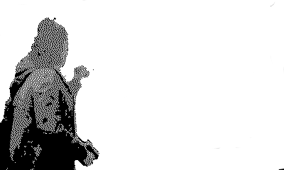
Below are the unedited image and an edited image that uses a threshold adjustment. I really like the striking block of large chunks of white and black and overall being less noisy than other methods. If I use this method in the final project, I would recommend adding an outline to maintain readability in both dark and light situations. The only downside is the limited detail, although it does create a stylized look.
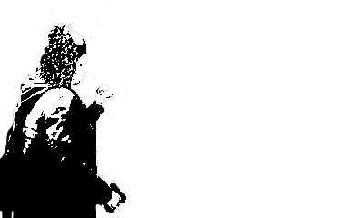
The final method is similar to the threshold method, but it applies between 5 and 12% noise before applying the threshold adjustment. This results in the high contrast of the standard threshold and the higher detail of the dithers, as such this is the preferred method to create the final character assets. This example used a 5% noise and 48 thresholds.
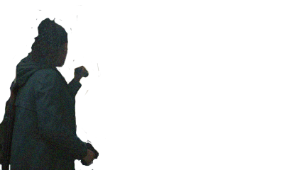
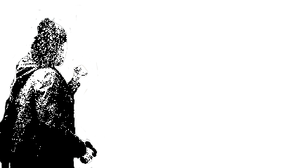
As for the creation of the character assets: I plan to use life action footage of myself to create these assets, as it will be less work than creating a detailed model and animating it only to force it through the graphical bottleneck of the playdates limitations. As mentioned earlier, the use of photographic/ photorealistic elements with less realistic elements can coexist in a final render without anything looking out of place.
The Enviroment:
Cooridoors
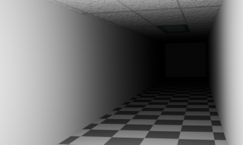
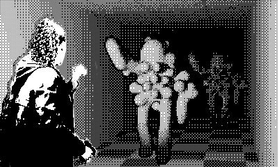
Above is a simple prerendered enviroment and the same enviroment dithered, with character elements superemposed onto the image to give an idea of what the final game might look like.
In my experiments. I’ve found it best to use environments that have textured walls or floors to provide visual contrast and clarity in the 1-bit color.
Complex Enviroments
Here is an example of a complex corridor lifted from a previous project: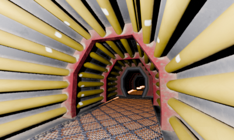
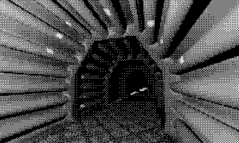
The Forrest
Another common environment for horror games is a forest this example uses z-depth multiplication-based fog in a scene with cylinders standing in as trees to test if this concept would work when dithered.
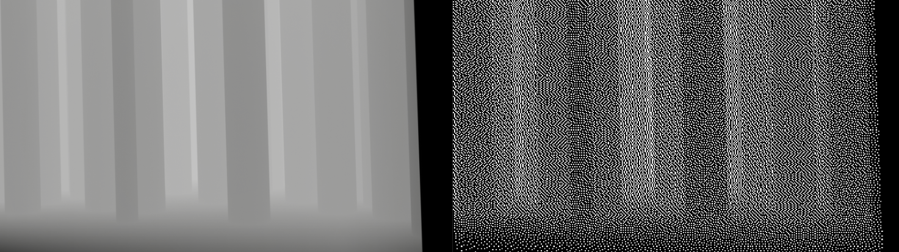
This first test shows it's important to make sure the levels in the render are balanced as to ensure the dithered image remains readable.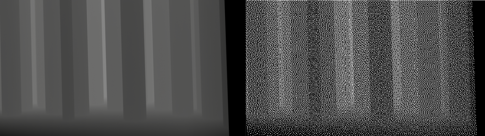
Making the ground more distinct increases visual clarity, but it is still quite unreadable.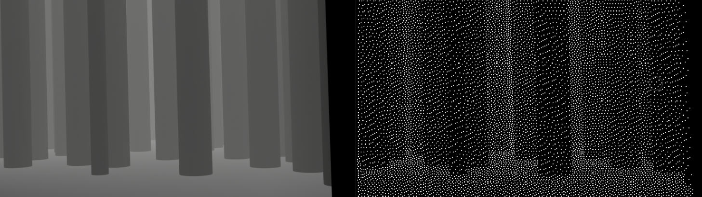
In previous experiments I’ve added between 5-12% noise to the image before applying a threshold adjustment, however this provided less clarity.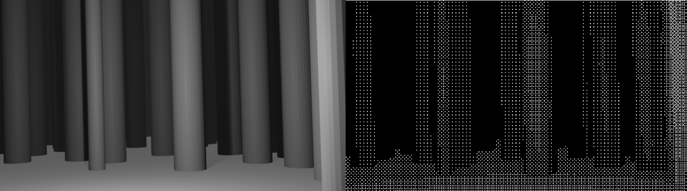
Ensuring there is a light source in the scene provides the clearest view, but more tests will have to be done with actual tree modelsMaking the Environments:
There are a few different methods to create the environments that will be used in the game. This section will discuss and compare these methods as the chosen technique will affect the game more than just visual but also how the exploration half of gameplay will work.
Prerendered Images
My first method uses a grid of 9 full screen images and swaps between them as the cursor moves around the screen. A coordinate is used the 'center of aiming area' and then the cursors position is referenced against this position to find its distance from this point and select the correct image to draw to screen accordingly.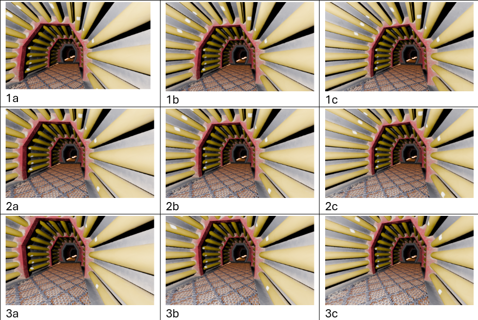
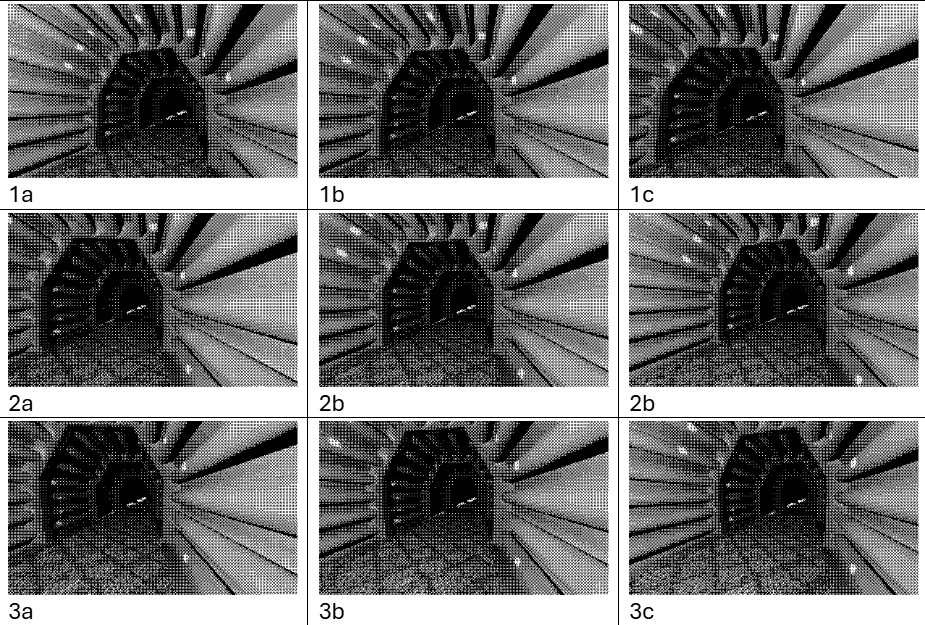
function enviromentParalaxCalcAndDraw()
--backgroundImage: draw(0,0)
if(cursorDistanceFromMidY <= -75)then print("a")
if cursorDistanceFromMidX < -100 then my3c_array:draw( 0, 0 )end
if cursorDistanceFromMidX < 100 and cursorDistanceFromMidX > -100 then my3b_array:draw( 0, 0 )end
if cursorDistanceFromMidX > 100 then my3a_array:draw( 0, 0 )end
end
if(cursorDistanceFromMidY >= -75 and cursorDistanceFromMidY <= 75)then print("b")
if cursorDistanceFromMidX <= -100 then my2c_array:draw( 0, 0 )end
if cursorDistanceFromMidX <= 100 and cursorDistanceFromMidX > -100 then my2b_array:draw( 0, 0 )end
if cursorDistanceFromMidX >= 100 then my2a_array:draw( 0, 0 )end
end
if(cursorDistanceFromMidY >= 75)then print("c")
if cursorDistanceFromMidX < -100 then my1c_array:draw( 0, 0 )end
if cursorDistanceFromMidX < 100 and cursorDistanceFromMidX > -100 then my1b_array:draw( 0, 0 )end
if cursorDistanceFromMidX > 100 then my1a_array:draw( 0, 0 )end
end
end
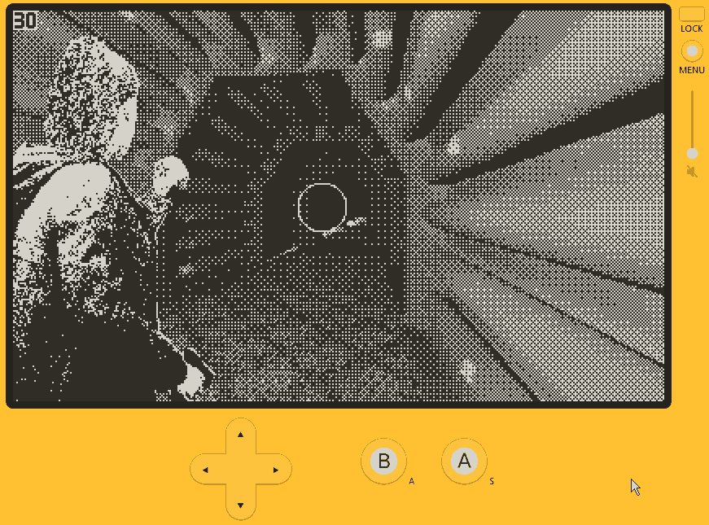
Givin the hardware of the playdate console which would limit us to 16mb of memory: having 9 separate full screen images (400 x 240 px each = 0.012mb per image) means we would be using 0.108 mb on a set of 9 images and 0.432mb per full environments including the proposed 4 lighting states. This is compared to using 1 larger 500 x 340 px (0.015mb per image) for each lighting state and sliding it around as was done to create parallax on the character. This method would sacrifice parallax effect for smoother motion and still retain the high level of detail provided by prerendering the environments, it also would only use 0.06 mb for a full environment with 4 lighting states as opposed to the 0.432mb of the 9 images array method. As such sliding a larger image around is the likely solution to creating parallax in a shooting gallery style combat, if that is the direction the project follows. here is the website we used to calculate image sizes at 1-bit color depth.Faux 3d Environment:
It may be possible to “render” a 3d scene by using a draw rect and then manually drawing each surface as a rect or a sprite (will need more research). This comes with the downside of limiting us in terms of environmental complexity; however, this would provide smooth parallax effects.
Genuine 3d Environments:
From some of my findings, it is possible to render simple 3d environments utilizing the mini 3d library. As seen in this example I found on the playdate development forums. Utilizing this method would undoubtably negatively affect performance, but it may be worth it if it would allow me to make the game more like our inspirations. The 3d would also be extremely limited, meaning the achievable level of detail would be less than that of prerendered environments. Using textures would allow us to make environments more detailed but would eat into the already limited performance and memory limitations. Lighting may also be unavailable with this method of environment. More info on 3d library. However, I would love to use this method. The documentation talks about how even a simple kart demo only achieves about 17-20 fps which would not be acceptable for the project. I doubt I'll be able to make my own 3d engine but here is some information as to how I might go about it .Wolfenstein-Style 3D Environments:
This method would involve making a Wolfenstein clone and then applying our character as an overlay. Lighting would also be an issue with this method. This method is called Raycasting, more details can be found here, this would also be my primary resource in teaching me to make my own raycasted game. Due to is performance this would be more desirable to the mini 3D library if the project takes the 3D route. I’m also aware that raycasted games can exist on playdate as seen in Castle Kellmore.
Direction of the Project:
If the game turns to a full 3d method, it may be a good trade off to remove the crank/ lighting mechanic, I feel like this is a tradeoff. It really depends on what is achievable on the playdate hardware.
As it stands, we have 2 potential directions for the project to take:
A 2d top-down exploration Metroidvania with gameplay like links awakening or the 2d Pokémon games. When entering combat gameplay switches to a static shooting gallery with a 3rd person perspective like Alan wake 2. combat will utilize the crank to power the characters flashlight to eliminate the environment and enemy. With controls being: D-pad is used for aiming, while the crank is used to power the flashlight, cranking and aiming can not be done simultaneously
or
A full 3d environment (rendered either as simple 3d with mini3d or with the Wolfenstein method). In this version, the player would always be in the 3rd person perspective and be able to move around the environment. The games' structure would maintain the metridinid structure. This would allow us to maintain the full gameplay feeling closer to that of our resident evil 2 remake inspiration. The improvement in gameplay will sacrifice the lighting mechanic, however I believe this would be a worthy trade off. The main limiting factor is the playdate's hardware; it may not even be possible to achieve this version of the game. Being controlled using D-pad to move, the crank defines looking left or right. If crank is docked arrows aims cursor. Press A to shoot and interact; B opens the menu.